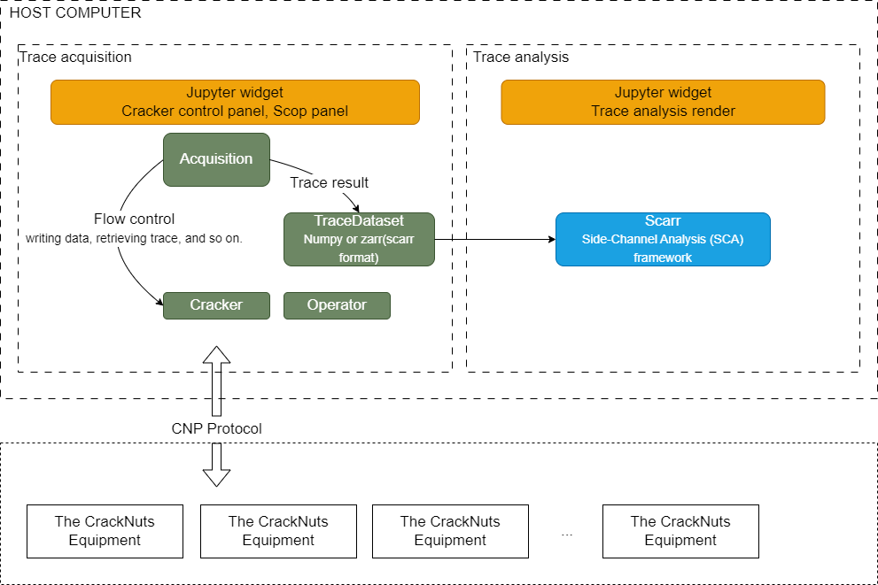

CrackNuts API Documentation
CrackNuts is an integrated side-channel analysis solution that combines the collaborative work of hardware and software. The host application is developed in Python and optimized for the Jupyter environment, providing an intuitive user experience to enhance ease of use and efficiency.
This document outlines the architecture, features, and API interfaces of the CrackNuts host application to help developers efficiently utilize the program for side-channel analysis.
The CrackNuts host application abstracts two main concepts: Cracker and Acquisition. The Cracker represents the devices within CrackNuts, used for operations such as device configuration, data transmission, and data collection. The Acquisition represents the execution flow in either test or run mode, which includes key processes such as device configuration, data transmission, and data collection.
The overall architecture of the host computer is shown in the diagram below.
